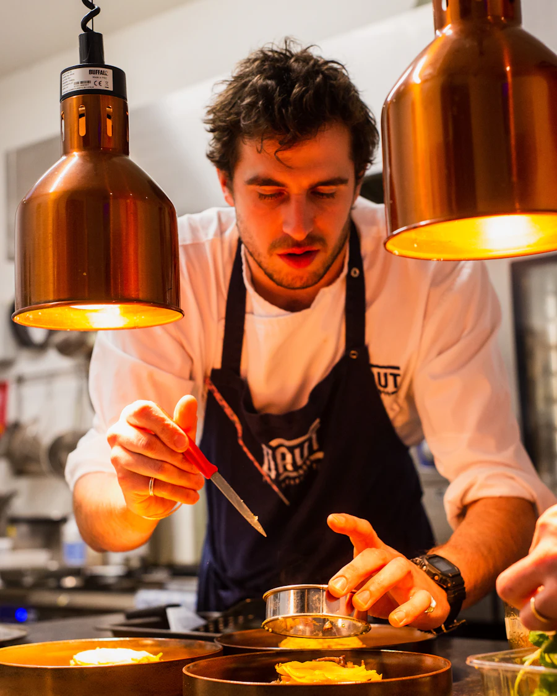
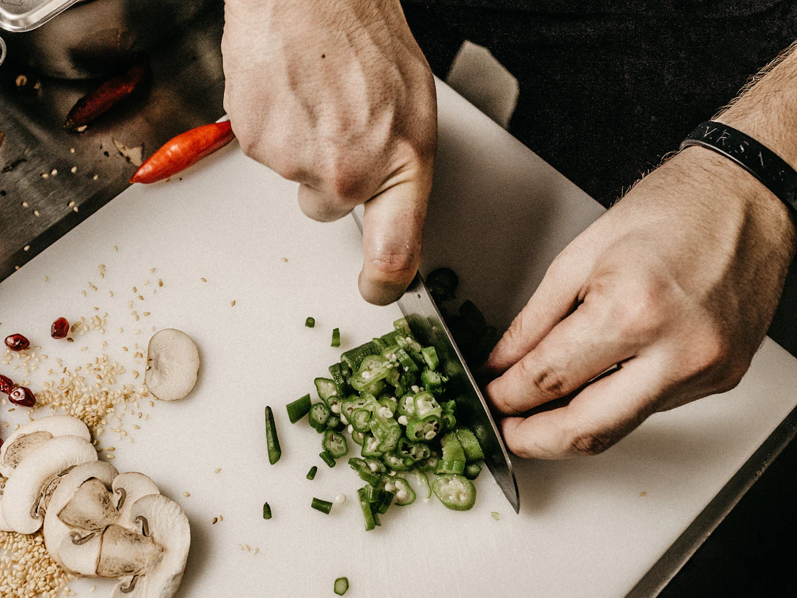
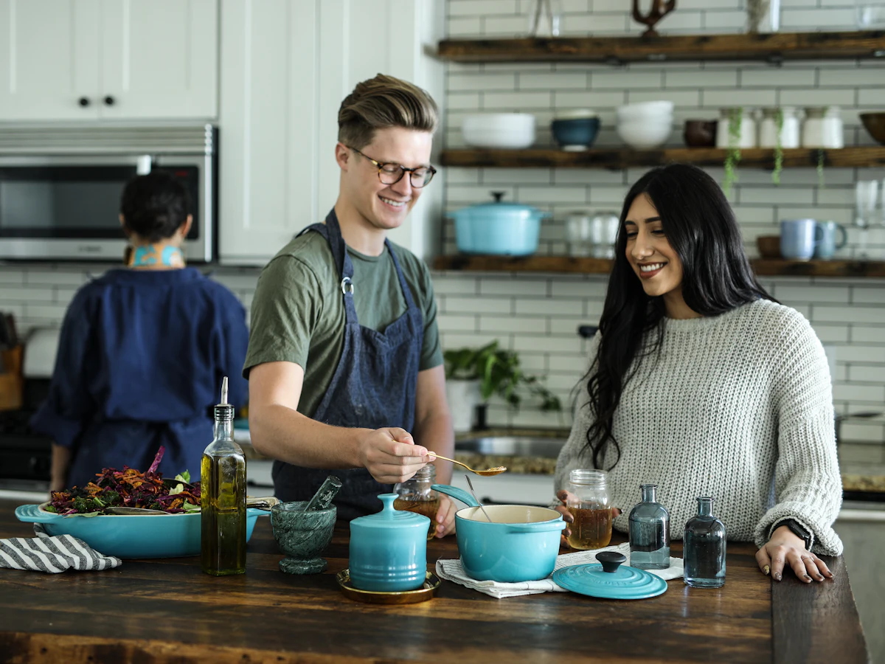
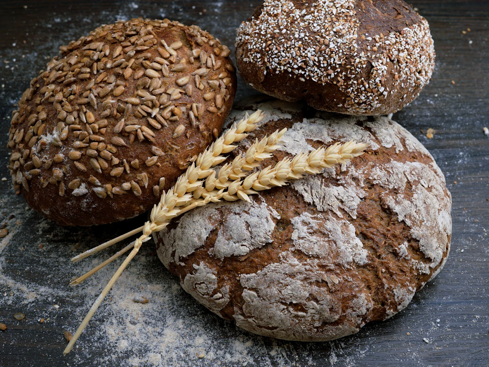
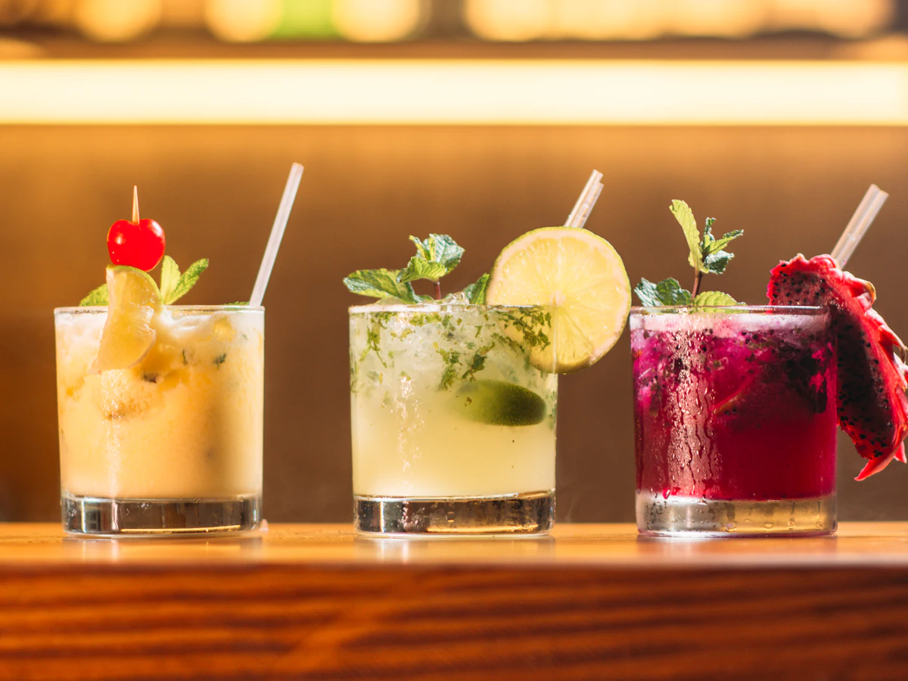

Le chef & la maison
Ismaël Traoré, cuisinier de mémoire.
Formé à Paris puis à Lyon, Ismaël est rentré à Abidjan avec une idée simple : servir les plats de sa grand-mère avec la rigueur d'une grande maison. Ici, le kedjenou mijote toujours dans le canari.
- produits ivoiriens
- 90 %
- producteurs partenaires
- 14
- de cuisson pour le bœuf
- 7 h
En coulisses
Faites défiler ↓

Le dressage, au millimètre 
Les herbes, coupées à la minute 
La brigade en plein service 
Le kedjenou, notre signature 
Le pain, cuit chaque matin 
Le bar, dès 18 h
Nos engagements
Du champ à l'assiette
- 1
Le marché, chaque matin
Légumes de Treichville et d'Adjamé, poissons du port, achetés à l'aube par le chef lui-même.
- 2
Des producteurs nommés
Pintades de Bouaké, cacao de Soubré, miel de Korhogo : nous connaissons chaque fournisseur par son prénom.
- 3
Zéro gaspillage
Les parures deviennent bouillons, les fruits trop mûrs finissent en sorbets. Nos déchets verts partent au compost.